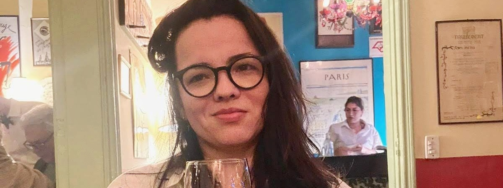
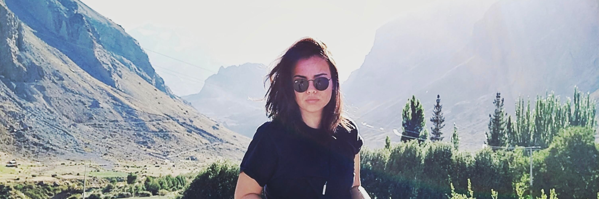

<div class="row align-items-center default-container">
    <div class="col-lg-8">
        <div class="content">
            <div class="content-left">
                <h2 class="default-topic">About me.</h2>
                <p class="default-p">
                    My name is Barbara Calderon and I enjoy <span class="default-highlight">creating software out of an
                        idea</span>.
                </p>
                <p>
                    
                </p>
                <p class="default-p">
                    I am a Software Developer from Brazil. Portuguese is my native tongue and I am fluent in 
                    English. 
                </p>
                <p class="default-p">My interest in professional software started 
                    back in 2018 when I had to capture, clean and analyze thousands of data for my 
                    Master's Thesis on International Political Economy. Turns out, solving a problem
                    through coding taught me a great deal about <span class="default-highlight">programming,
                    logic and automation</span>. Next year, I was back into college to study computers and
                    also landed my <span class="default-highlight">first job in the tech industry</span>.
                </p>
                <p class="default-p">
                    Fast-forward to today, and so far I have had the privilege of working with fantastic
                    people in the industry.
                </p>
                <p class="default-p">
                    I had the chance to code in <span class="default-highlight">
                        several technologies</span> and also grow important <span class="default-highlight">
                        soft skills</span>: I led transformative changes to improve team dynamics
                    and organizational culture inside a tech company. I have acquired code knowledge while working with groups of
                    developers and studying documentation. I gained experience in programming logic,
                    enhanced software craftsmanship, <span class="default-highlight">developed websites</span>,
                    <span class="default-highlight">REST APIs</span>, built visual dashboards,
                    <span class="default-highlight">scrapers and crawlers</span>, and <span class="default-highlight">
                        retrieved and processed data</span> from various sources.
                </p>
                <p>
                    
                </p>
                <p class="default-p">
                    But that's on a professional side. On a personal note, other things about me include: I have a passion for <span class="default-highlight">
                    documentaries</span>, <span class="default-highlight">purpose-driven organizations</span>, 
                    black coffee, engaging book stories, <span class="default-highlight">teamwork</span>, 
                    <span class="default-highlight">science fiction and suspense movies</span> (they're the best!),
                    pesto sauce, Linux, and the community experience. When travelling, I usually document my 
                    <span class="default-highlight">whereabouts</span> and <span class="default-highlight">experiences</span>
                    so I can revisit them later.
                </p>
                <p class="default-p">
                    I am continuously learning and adapting to new technologies and methodologies.
                    My goal is to create efficient, scalable, and user-friendly <span class="default-highlight">software
                    solutions that make a difference</span>. Whether it's front-end development, back-end services,
                    or full-stack applications, I am <span class="default-highlight">passionate about every aspect
                     of software development.</span>
                </p>
            </div>
            <div class="content">
                <div class="content-left">
                    <h2 class="default-topic">Reach out.</h2>
                    <p class="default-p">
                        Follow me on social media, check out my Github account for projects or
                        <span class="default-highlight">reach out to arrange a meeting</span>.
                        I would be happy to know how my <span class="default-highlight">problem-solving skills</span>
                        can contribute to<span class="default-highlight"> address the challenges you are facing</span>.
                    </p>
                    <button>
                        <a routerLink="/contact">
                            > Contact me
                        </a>
                    </button>
                </div>
            </div>
        </div>
    </div>
</div>
